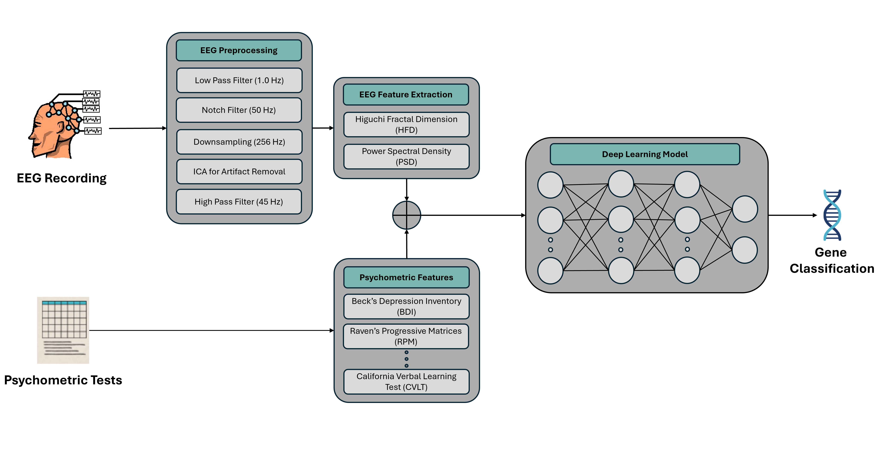
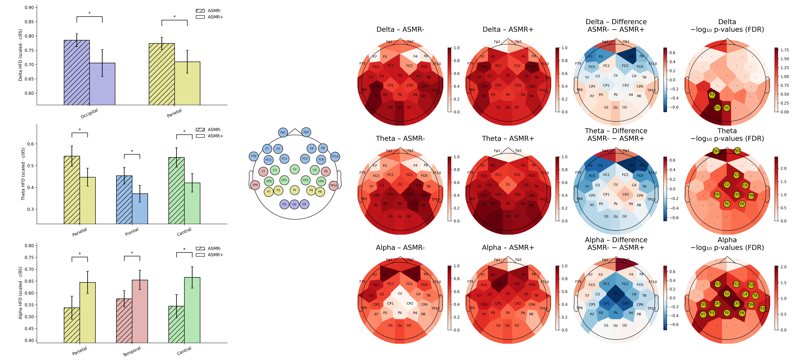
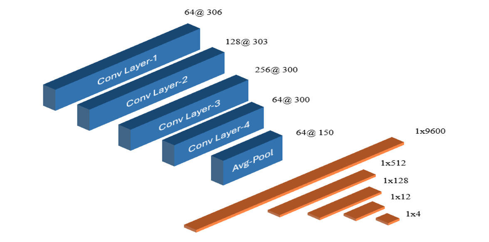

Research Focus
Deep learning for neuroimaging
I build deep learning models for neuroimaging modalities, with an emphasis on robust representations that can generalize across datasets, sites, and recording conditions.
Research Profile
I am a Senior Researcher at The University of Winnipeg, working with Dr. Camilo Valderrama and Dr. Stephen D. Smith. My research focuses on building deep learning models for neuroimaging modalities, with current interests in JEPA-based multi-site harmonization and foundation models for wearable EEG devices.
I completed my MSc in Applied Computer Science at the University of Winnipeg and previously earned a BEng in Electronics and Communication Engineering from Gujarat Technological University.
Research Focus
I build deep learning models for neuroimaging modalities, with an emphasis on robust representations that can generalize across datasets, sites, and recording conditions.
Current Direction
My current work explores JEPA-based approaches for harmonizing neuroimaging data collected across multiple sites while preserving biologically meaningful variation.
Emerging Work
I am also interested in using JEPA to develop foundation models for wearable EEG devices that can support scalable and data-efficient downstream learning.
News
2026
Serving as an Associate Editor for EMBC 2026.
2026
Contributed to an awarded NSERC Alliance grant proposal involving the University of Winnipeg and Interaxon.
2026
Contributed to an awarded UWinnipeg Major Research Grant proposal supporting direct research costs and laboratory operations.
2025
Graduated as a Graduate Student of Highest Distinction.
Publications
Selected publications are listed below, followed by additional journal and conference papers.

Dharia, S., Valderrama, C. E., Liu, Q., Smith, S. D. Journal of Neural Engineering, 2026. DOI: 10.1088/1741-2552/ae4926

Dharia, S. Y., Liu, Q., Smith, S. D., Valderrama Cuadros, C. E. IEEE Journal of Biomedical and Health Informatics, 2025. DOI: 10.1109/JBHI.2025.3639217
Figure note: the illustration featuring a face with an EEG headset was designed by Vansh Patel (arguably the best-designed part of the paper).

Dharia, S. Y., Valderrama Cuadros, C. E., Liu, Q., Fredborg, B. K., Desroches, A. S., Smith, S. D. IEEE Journal of Biomedical and Health Informatics, vol. 29, no. 12, pp. 8751-8758, 2025. DOI: 10.1109/JBHI.2025.3612301

Dharia, S. Y., Liu, Q., Smith, S. D., Valderrama Cuadros, C. E. Biomedical Signal Processing and Control, 2025. DOI: 10.1016/j.bspc.2025.108390

Bipartite Graph Adversarial Network for Subject-Independent Emotion Recognition
Niaki, M., Dharia, S. Y., Chen, Y., Valderrama Cuadros, C. E. IEEE Journal of Biomedical and Health Informatics, vol. 29, no. 10, pp. 7234-7247, 2025. DOI: 10.1109/JBHI.2025.3570187

Dharia, S. Y., Hojjati, M., Camorlinga, S. G., Smith, S. D., Desroches, A. S. Proceedings of the IEEE EMBS International Conference on Biomedical and Health Informatics (BHI), Houston, TX, 2024, pp. 1-8. DOI: 10.1109/BHI62660.2024.10913664

Dataset-Independent EEG Channel Selection for Emotion Recognition
Dharia, S. Y., Camorlinga, S. G., Valderrama Cuadros, C. E., Hojjati, M. Proceedings of the IEEE Engineering in Medicine and Biology Society (EMBC), Orlando, FL, 2024, pp. 1-4. DOI: 10.1109/EMBC53108.2024.10782444

Multimodal Deep Learning Model for Subject-Independent EEG-based Emotion Recognition
Dharia, S. Y., Valderrama Cuadros, C. E., Camorlinga, S. G. Proceedings of the IEEE Canadian Conference on Electrical and Computer Engineering (CCECE), Regina, SK, 2023, pp. 105-110. DOI: 10.1109/CCECE58730.2023.10289007